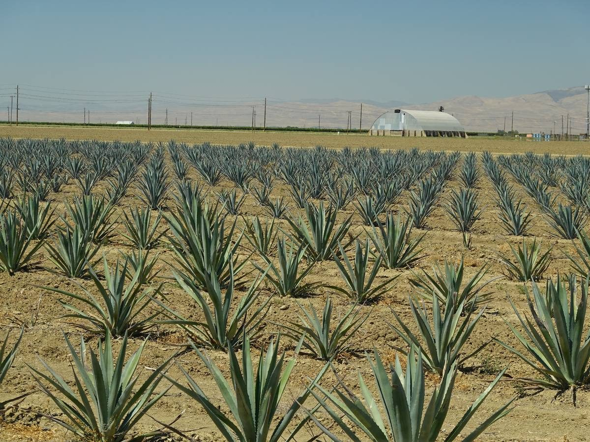
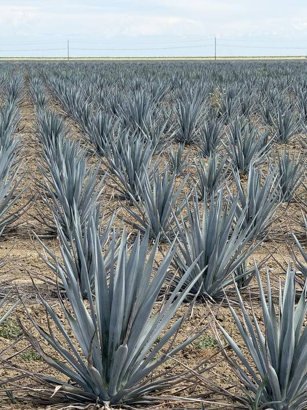
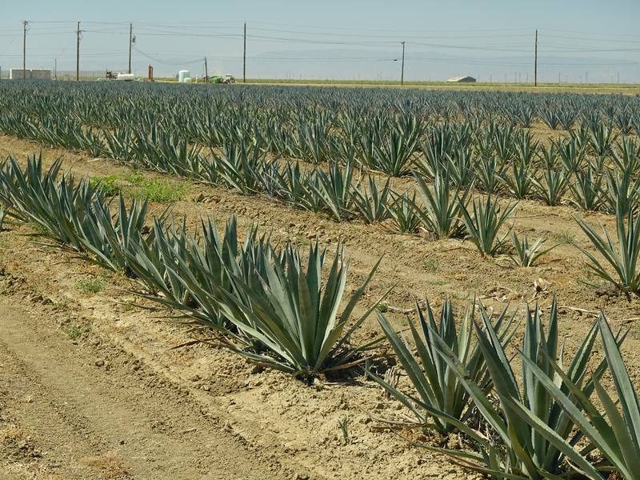
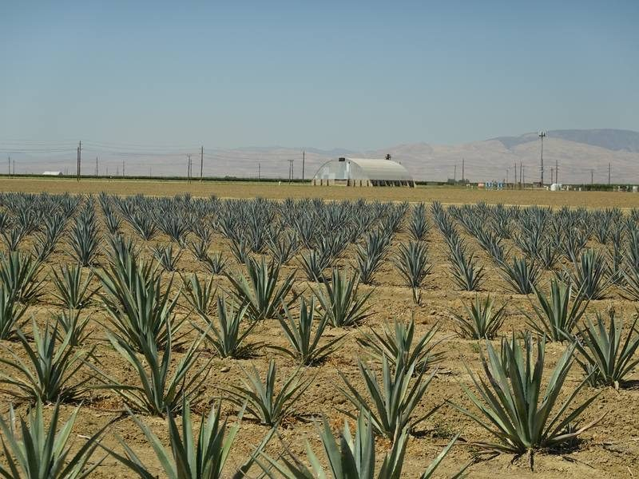
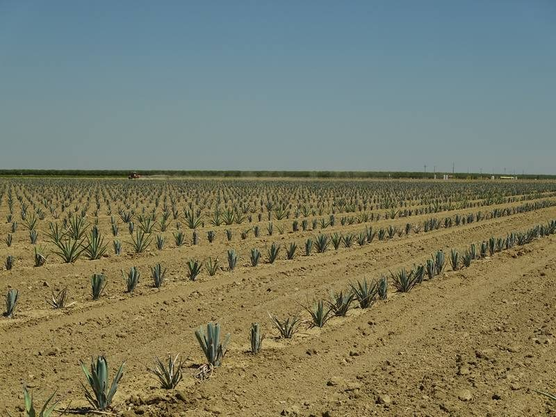
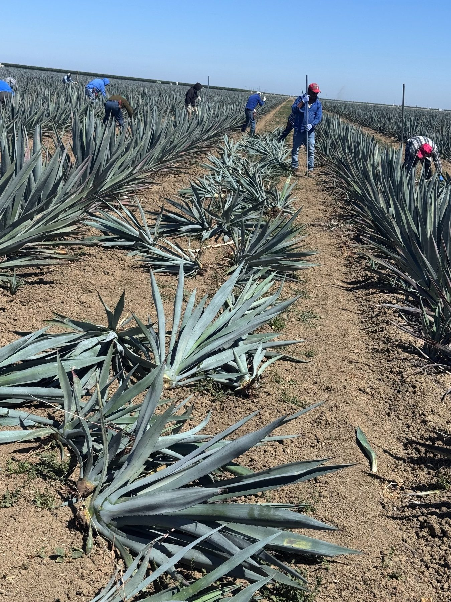
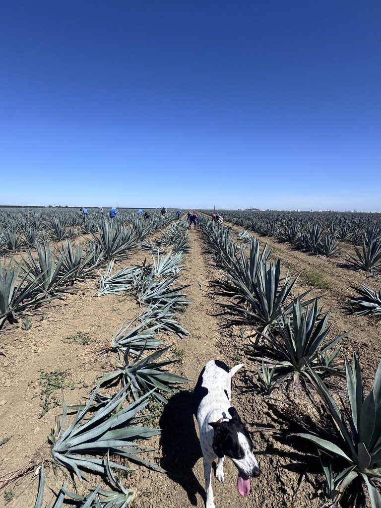
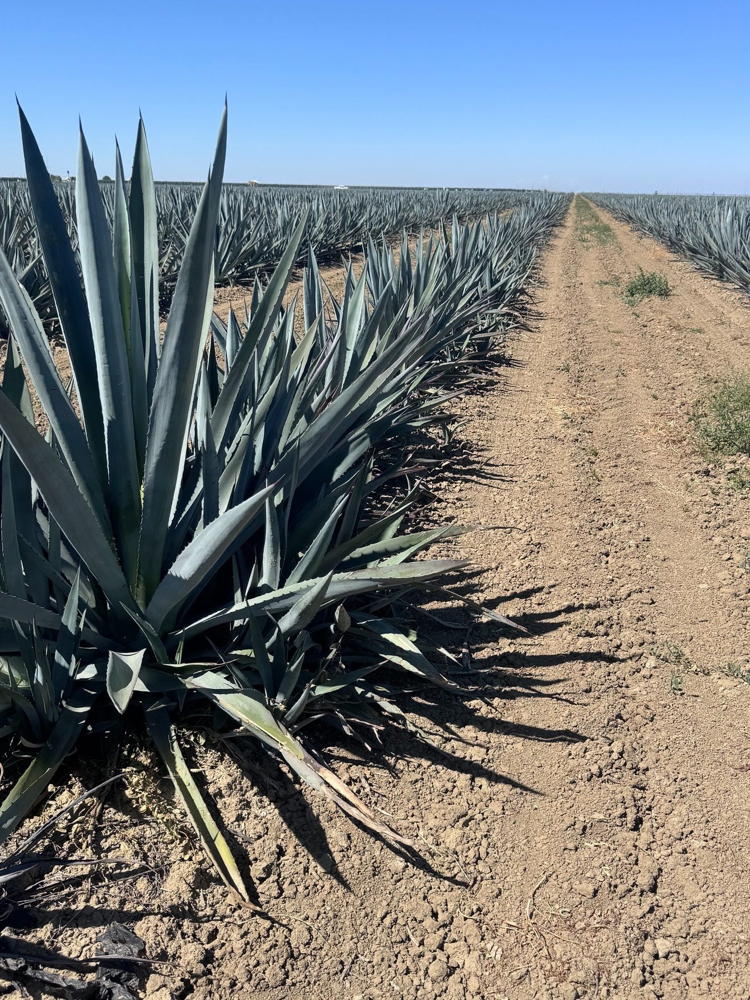
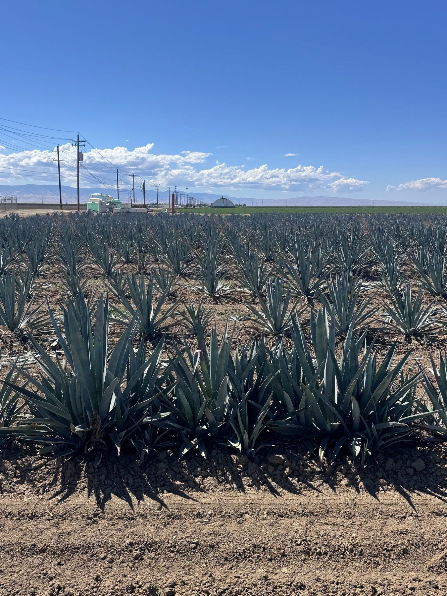
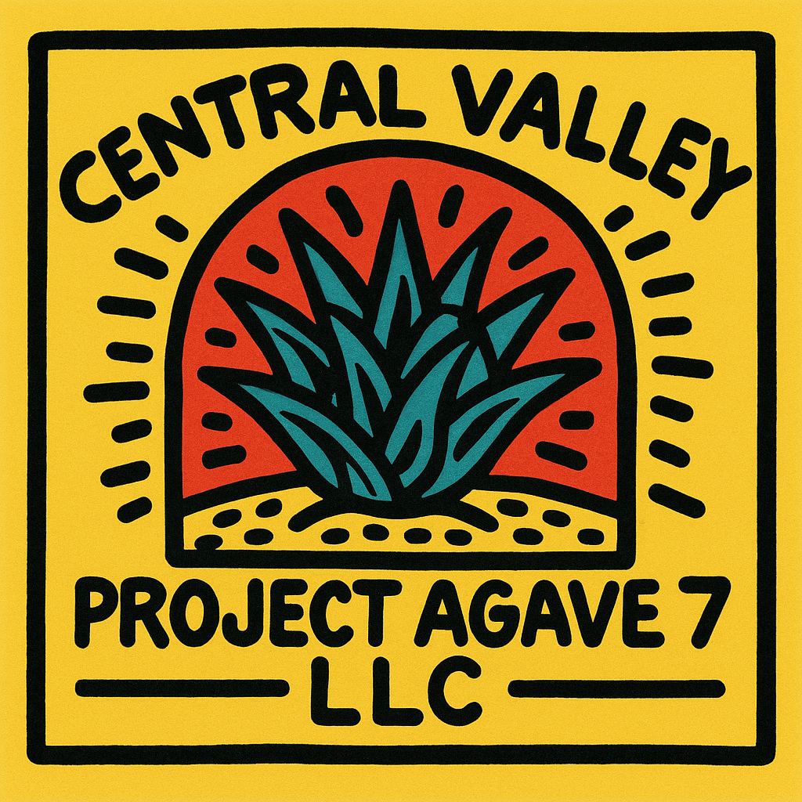

Pioneering domestic agave cultivation in the heart of the San Joaquin Valley. Central Valley Project Agave Growers 7 LLC — four generations of farming expertise, reimagined for a new American crop.
Discover Our Story Inquire About SupplyOur family began farming in Five Points, California in 1929 — when the San Joaquin Valley was still being settled. Nearly a century later, we remain committed to the same land, the same values, and the relentless pursuit of what this remarkable soil can grow.
In Spring 2023, we took a bold step: planting the first agave crop in our farm's history. Recognizing the surging domestic demand for California-grown agave and the ideal growing conditions of the western San Joaquin Valley, we launched Central Valley Project Agave Growers 7 LLC to become a premier domestic supplier.
Our land sits at the foot of the Diablo Range — the same intense sun, dry heat, and well-drained alkaline soils that make agave thrive in the highlands of Mexico are right here in the Central Valley.

Our agave is grown on ground that would otherwise sit idle — not by choice, but by mandate. Our farm lies within the Westlands Water District, the largest agricultural water district in the United States, covering over 600,000 acres of the western San Joaquin Valley.
Westlands receives its water through the federal Central Valley Project, which diverts water from Northern California’s rivers southward to farms and cities. For decades, this system sustained some of the most productive farmland on earth. But under the Endangered Species Act and a series of federal court rulings and biological opinions designed to protect Sacramento-San Joaquin Delta fish species — including the Delta smelt and Chinook salmon — water deliveries to Westlands have been severely and repeatedly curtailed. In many years, farmers receive a fraction of their contracted supply, and in dry years, deliveries can fall to zero.
The result: some of the most fertile, productive soil in the world is being intentionally fallowed — left unplanted and unproductive — simply because there is no water to farm it conventionally.
We refused to accept that outcome for our land. Agave offered a way forward.
“Some of the most productive farmland in the world was going to be left fallow. We needed a crop that could survive on what little water we have — and agave is that crop.”
The largest federal water district in the U.S. — and among the most threatened by water cutbacks.
In critically dry years, Westlands farmers can receive zero water allocation from the Central Valley Project.
Unlike cotton, tomatoes, or almonds, agave can withstand extended periods without irrigation — it will slow, but it will not die.
Agave keeps our land productive, our family farming, and our community employed — rather than surrendering our fields to fallow.
From 30 acres in 2023 to over 225 acres today — our agave operation is scaling rapidly to meet growing market demand.







Whether you're a distillery, processor, spirits brand, or investor looking to secure a domestic supply of premium California-grown agave, we'd like to hear from you.
Ryan Beecher
ryan@farmingd.com
Jim Beecher
jbeecher@farmingd.com
PO Box 596
Five Points, CA 93624
225+ acres under cultivation
Est. harvest readiness: early 2030s
"From the same land our family has farmed since 1929 — now growing the crop that will define the next generation of California agriculture."
